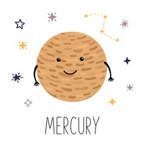
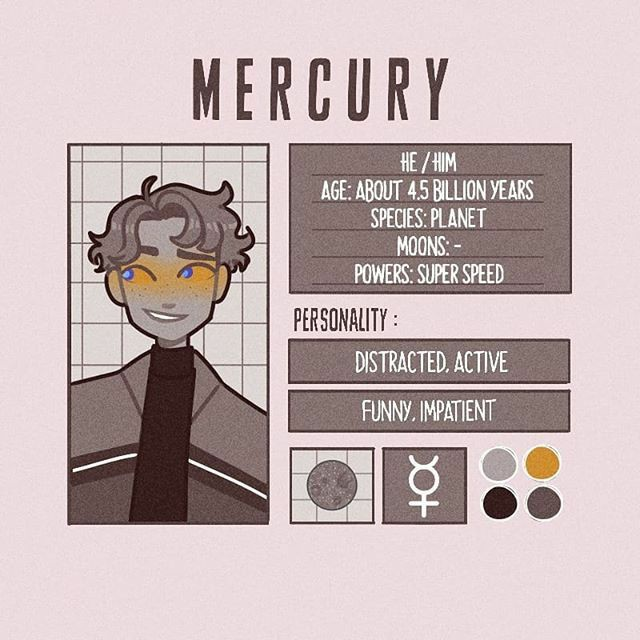

Здравсвуйте!
Я Меркурий, самая близкая к Солнцу и самая маленькая планета солнечной системы. Из-за близости к Солнцу почти вся моя поверхность очень горячая, поэтому я одинок и на мне жизнь невозможна. Даже спутников у меня нет!
Первые упоминания обо мне встречаются в вавилонских астрономичесих таблицах 14 в. до н.э. Имя я получил по имени римского бога торговли Меркурия благодаря своему стремительному движению по небу
Я немногим больше Луны, мой диаметр составляет около 4900 км, также я уступаю в размерах Ганимеду, спутнику Сатурна. Однако у меня очень большое и тяжёлое металлическое ядро, поэтому я в 5 раз тяжелее Луны!
Астрономы договорились называть мои кратеры в честь великих философов, поэтов, писателей и художников. Так мои самые крупные кратеры - Рембрандт, Бетховен, Достоевский и Шекспир.
Хотя я и нахожусь ближе всех планет к Солнцу, я всё же не самая горячая планета Солнечной системы. Из-за моего медленного вращения вокруг своей оси обращённая к Солнцу сторона разогревается до +427°, но обратная охлаждается до -193°. На глубине всего 1 м температура уже почти не меняется и составляет +75°.
Я совершаю один оборот вокруг своей оси почти за 59 земных суток.
Моё небо всегда чёрное, потому что у меня практически нет атмосферы. Солнце у меня на небе выглядит в 2-3 раза больше, чем с Земли, и совершает по небу движения по причудливым линиям.
Меркурий
- Пол: Мужской
- Возраст: 4.5 биллионов лет
- Спутник: Нет
- Способности: Супер скорость
- Качества: Активный, смешной, рассеянный, нетерпеливый
- Любимые цвета: Тёмные оттенки
